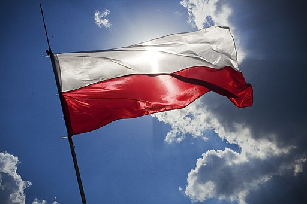

Isoimmat kaupungit
- Varsova
- Krakova
- Łódź
- Wrocław
- Poznań

Ilmasto
Puolan ilmasto on väli-ilmasto leudomman Länsi-Euroopan meri-ilmaston ja ankaramman Itä-Euroopan mannerilmaston välillä. Lunta on koko maassa, pohjoisessa noin 40 päivän ajan, idässä ja etelässä 60 päivän ajan ja Karpaateilla sadan päivän ajan. Sadetta saadaan ympäri vuoden, eniten kesällä.
Tietoja maasta
| asukasmäärä | 38 483 957 |
|---|---|
| pinta-ala | 312 679 km2 |
| rahayksikkö | złoty |
| BKT | 1 193,0 miljardia |